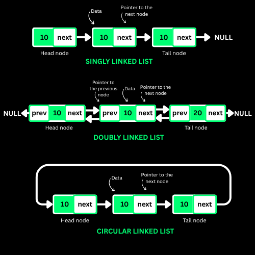
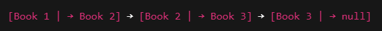
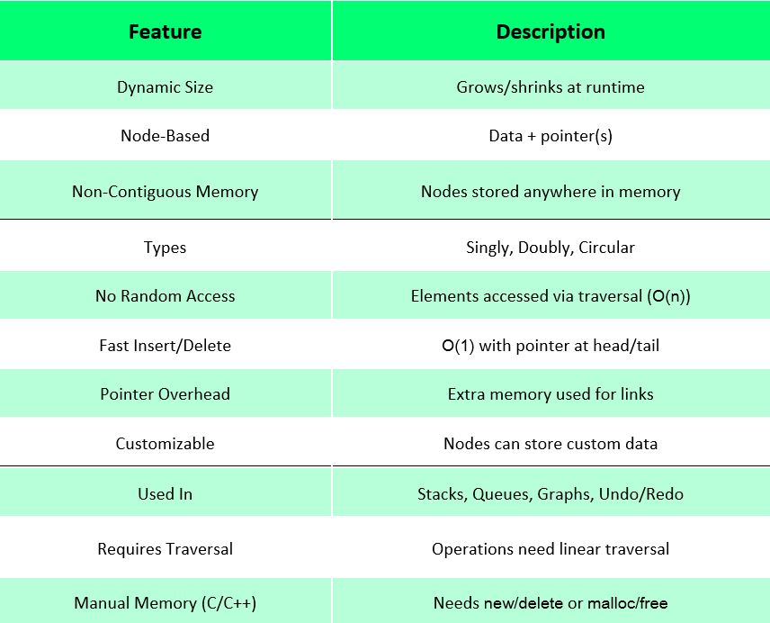
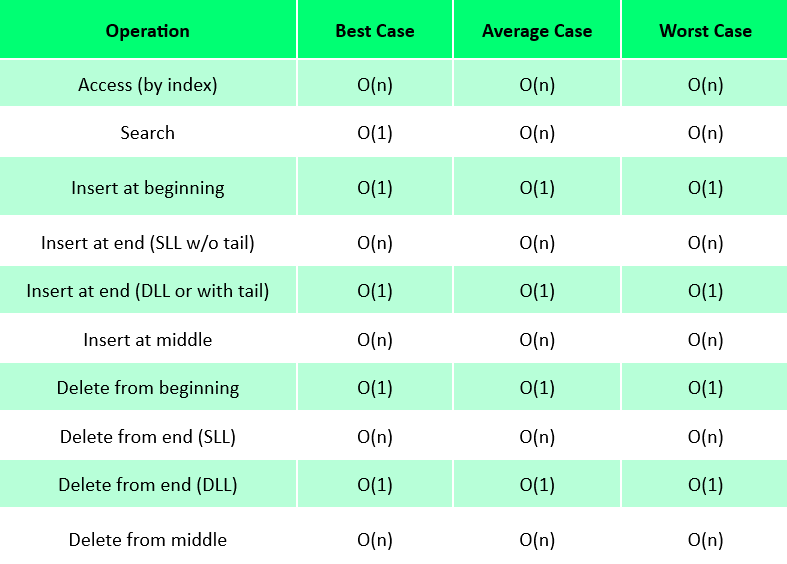

Insertion — at the head
Point the new node at the current head, then make it the head. Two writes, no traversal, no shifting — the single cheapest insert in any linear structure.
O(1)time
A linear collection of nodes whose order comes from pointers, not from physical placement in memory. Each node carries its data plus the address of the next node — so growing the list never means resizing or shifting anything.

Give up random access, and in exchange insertion and deletion stop costing a shift.
A linked list is a chain. Each link (a node) holds a value and a little arrow pointing at the next link.
The nodes can live anywhere in memory — what makes them a list is the arrows, not their addresses.
Easy to grow: adding a name to an array means resizing the whole box. In a linked list you make one node and connect one arrow.
Easy to remove: break the arrow into the node you are dropping and point around it. Nothing else moves.
A node is { data, next }. The list is identified by a head pointer; the last node's next is NULL, which is what terminates every traversal.
There is no arithmetic addressing. Reaching index k costs k hops, so access and search are O(n) — the price you pay for cheap structural edits.
Insertion and deletion at a known position are O(1): two or three pointer writes. Keeping a tail pointer makes appends O(1) too, and a prev pointer (doubly linked) makes tail deletion O(1).
Each node costs extra memory for its pointer(s), and nodes scattered across the heap defeat the CPU cache — which is why an array often wins in practice even when the theory favours a list.
NULL.
Build, walk and rewire a live list. Insert at the head instantly, then insert at the tail and watch the traversal that makes it O(n) — then reverse the whole thing one pointer at a time.
Pointer-based order buys elasticity and costs random access.

Four wiring patterns, from the lightest single link to a fully circular doubly linked ring.
Every operation is either a pointer rewrite (cheap) or a traversal (linear). Learn to tell them apart.
Point the new node at the current head, then make it the head. Two writes, no traversal, no shifting — the single cheapest insert in any linear structure.
Walk to node position-1, then relink in this order: new.next = prev.next first, prev.next = new second. Reverse that order and you lose the rest of the list.
Traverse until next == NULL, then attach. O(n) for a plain singly linked list, or O(1) the moment you maintain a tail pointer.
head = head.next, then free the old node. Nothing else in the list is touched.
Find the node while keeping prev, then prev.next = cur.next and free cur. The relink is O(1); the finding is what costs you.
A singly linked list must stop one node early to null out the new tail, so it walks the whole list. A doubly linked list just steps back one pointer.
Start at the head and follow next until NULL, comparing as you go. There is no shortcut and no binary search — order in memory means nothing here.
The classic three-pointer loop: save next, flip cur.next to prev, advance both. One pass, no extra memory, and prev ends up as the new head.
Floyd's slow/fast pointers: slow moves one, fast moves two. Fast hitting NULL means slow is at the middle; fast meeting slow means the list has a cycle.
Merge sort is the right algorithm here — it needs only sequential access and splits with the slow/fast trick, so no random indexing is required.
Pick an operation, pick a language, copy it out. Your language choice is remembered across every page.
Structural edits are constant time; anything that needs to *find* a node is linear.

The syntax and templates worth keeping open in a second tab. Print this section or grab the full multi-topic sheet.
Every one of these has cost someone an interview. Open each and check yourself.
Eight problems, easy to hard, each with a one-line hint. Try it without the hint first — the hint is for when you are properly stuck, not for when you are impatient.